PEIYUAN ZHU · INTERACTIVE SHOWCASE
Dog–Bone
Interaction
Does the dog pick up the same bone that was already on the ground?
Make the dog pick up the bone and hold it in its mouth.
让狗叼起骨头，并一直含在嘴里。Follow contact, lift, and the original ground position. A new object appearing in the mouth does not establish that the source bone was picked up.
One source case · three paired prompts · archived LucyEdit and Gemini clips. These are different conditions of the same case, not independent test examples.
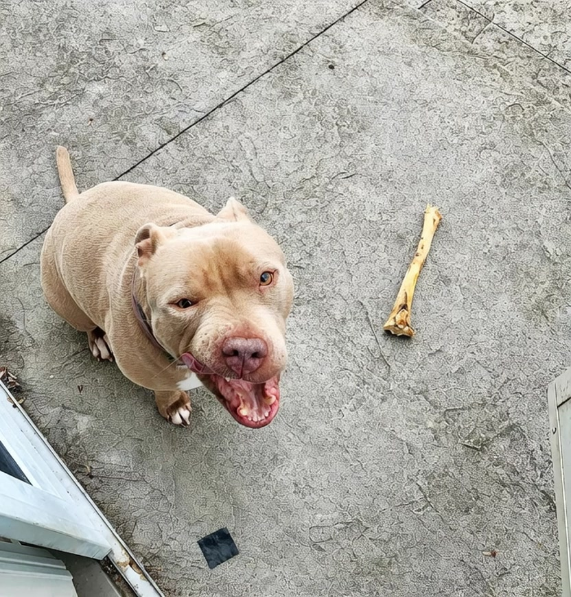
Use ← → / Page Up / Page Down to navigate. Open the separate motion anchor ↗ · another dog and object; a motion reference only.
01 · THE ORIGINAL CASE
Source, archived target & early result
The three videos from the survey’s dog–bone example, with the later source attribution retained.
Make the dog pick up the bone and hold it in its mouth.
The original bone lies beside the dog.
Open video ↗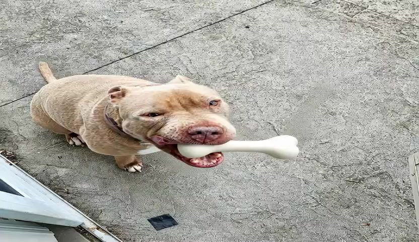
A different-looking bone is in the mouth from frame 0.
Open video ↗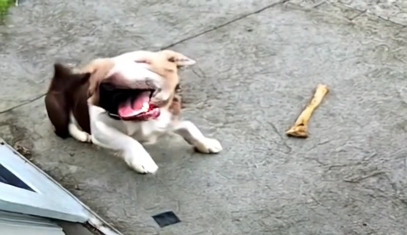
The ground bone remains; the dog’s coat changes.
Open video ↗Shared time in seconds · original aspect ratios · shorter clips hold their last frame · muted playback
The archived target does not show the source bone being picked up. Treat it as an archived reference, not verified ground truth for the contact → lift → hold sequence.
The earlier survey labels the third clip “E3 prediction”. The subsequent asset record identifies it as LucyEdit. Original videos are preserved without re-encoding.
02 · PROMPT ABLATION · P0
Original wording: a substitute appears
Frozen base and V19 adapter receive the same source and instruction.
Make the dog pick up the bone and hold it in its mouth.
让狗叼起骨头，并一直含在嘴里。Track the original bone on the ground.
Open video ↗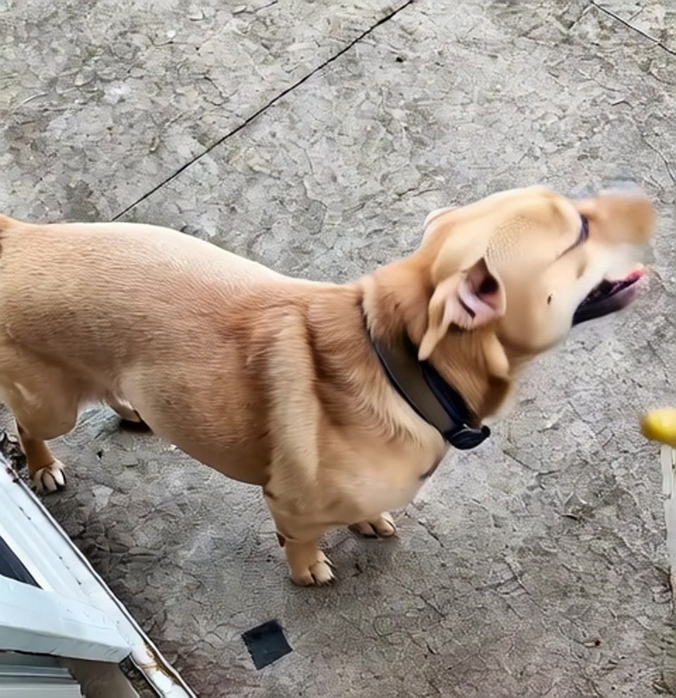
Same source, prompt and seed.
Open video ↗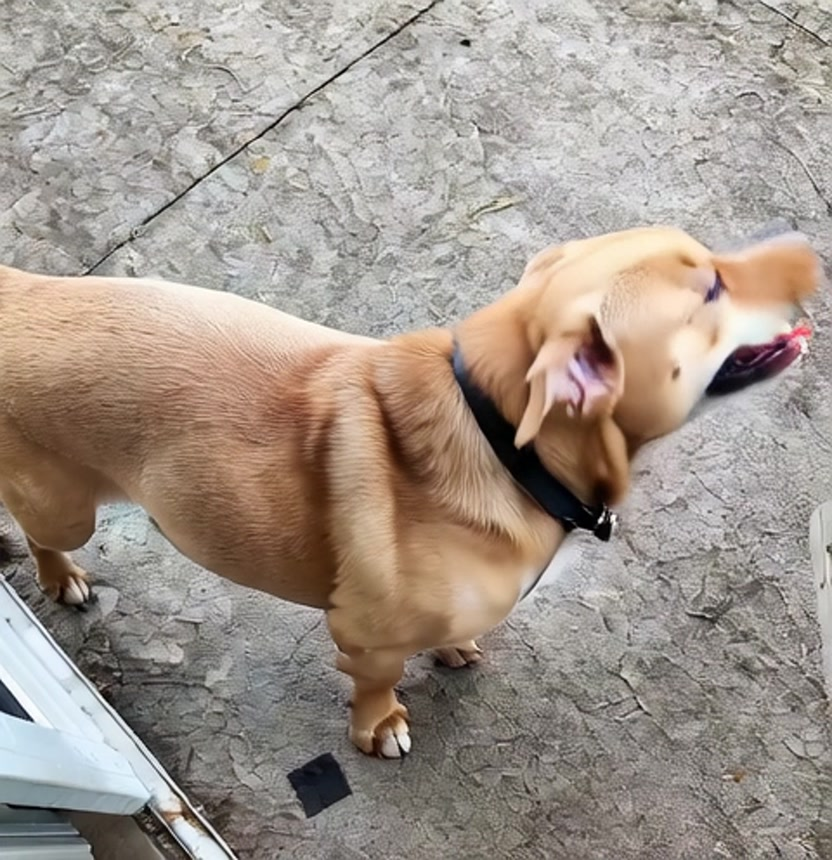
ABS_TRANSPORT · checkpoint 192.
Open video ↗Shared time in seconds · original aspect ratios · shorter clips hold their last frame · muted playback
Both outputs introduce a yellow mouth-held object while the original bone remains on the ground. A mouth-held object appears, but the designated object is not transported.
Matched pair · seed 2027 · 40 denoising steps · 81 frames at 25 fps · V19 checkpoint 192.
03 · PROMPT ABLATION · P1
Name the visible bone: attention without pickup
The wording explicitly points to the object already present in the video.
Make the dog pick up the bone already visible in the video with its mouth.
让狗用嘴叼起视频中已经可见的那根骨头。Track the original bone on the ground.
Open video ↗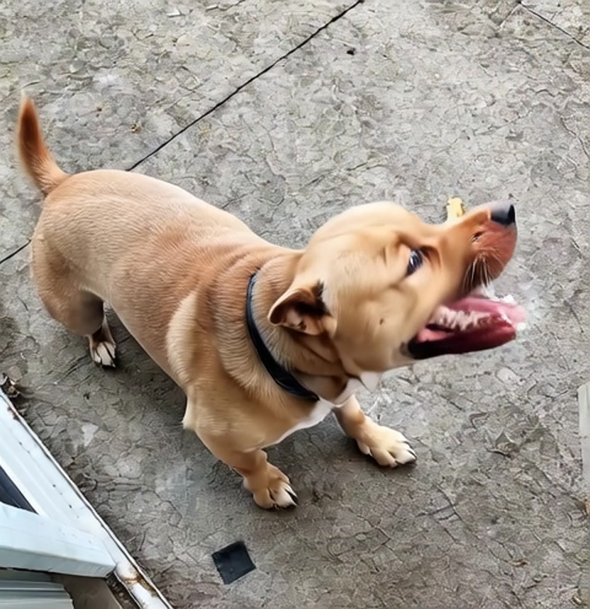
Same source, prompt and seed.
Open video ↗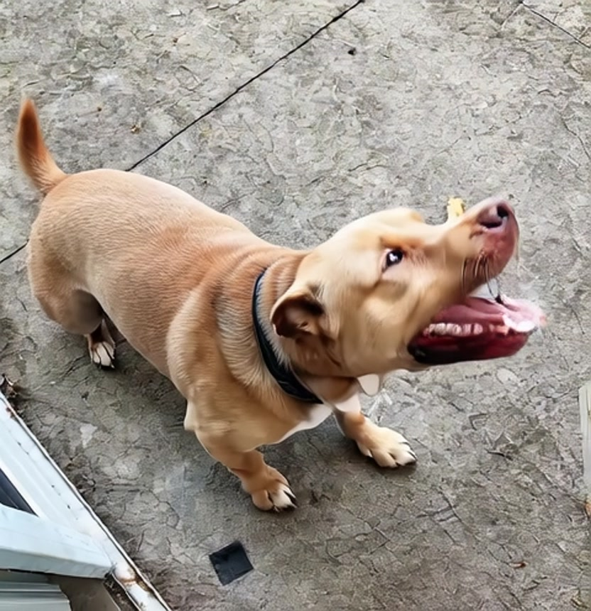
ABS_TRANSPORT · checkpoint 192.
Open video ↗Shared time in seconds · original aspect ratios · shorter clips hold their last frame · muted playback
The yellow substitute is suppressed. The dog looks or lowers its head toward the original bone, but the bone stays at its original ground position; pickup and a sustained hold are absent.
The same matched settings as P0. The instruction changes the response, but does not complete the requested interaction.
04 · PROMPT ABLATION · P2
Same-object constraints: extra objects return
A stricter instruction spells out object identity and forbids substitution.
Make the dog pick up the same single bone already visible on the ground in the source video with its mouth, and keep holding that same bone. Do not add, replace, duplicate, or recolor the bone.
叼起并持续含住源视频地面上已有的同一根骨头；不要新增、替换、复制或改变骨头颜色。Track the original bone on the ground.
Open video ↗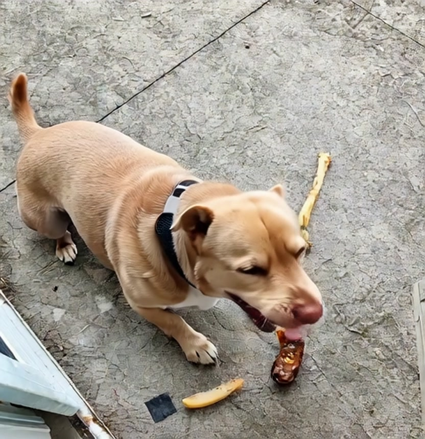
Same source, prompt and seed.
Open video ↗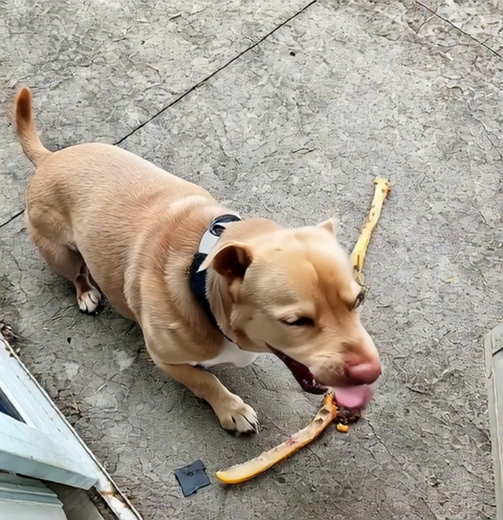
ABS_TRANSPORT · checkpoint 192.
Open video ↗Shared time in seconds · original aspect ratios · shorter clips hold their last frame · muted playback
Extra yellow, white, or dark objects appear while the source bone remains. Stronger verbal constraints do not establish conservation and transport of that original object in these outputs.
The same matched settings as P0 and P1. This is a single-case diagnostic, not an overall model ranking.
05 · GEMINI · AUGUST → OCTOBER
Gemini: August vs October
The same editing instruction, two dated Gemini results.
Make the dog pick up the bone already visible in the video with its mouth.
让狗用嘴叼起视频中已经可见的那根骨头。Track the original bone on the ground.
Open video ↗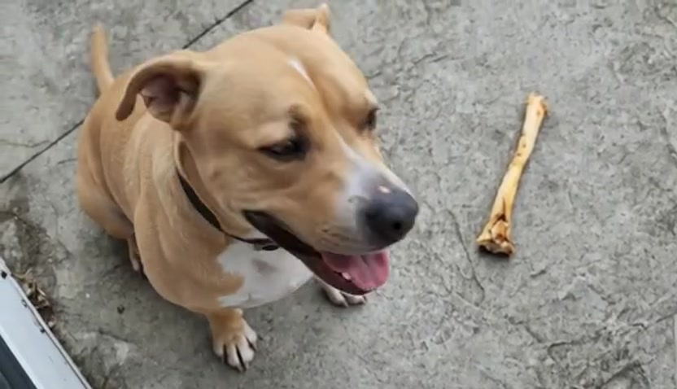
The dog turns toward the bone; it remains on the ground.
Open video ↗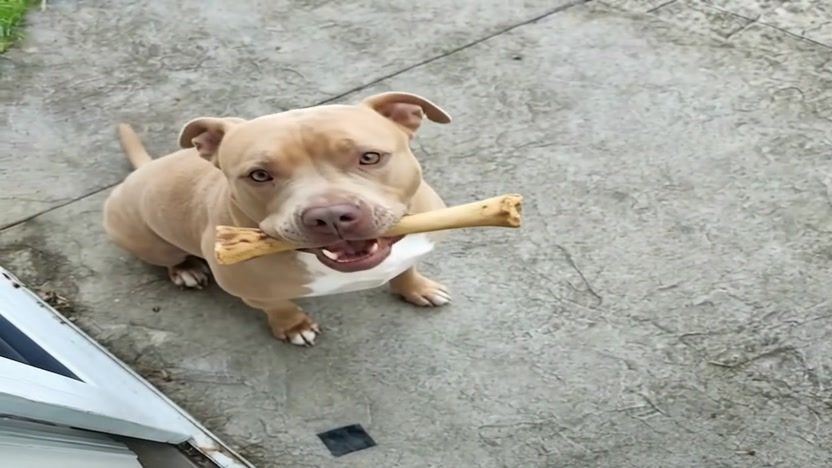
The dog lowers its head, then lifts a bone in its mouth.
Open video ↗Shared time in seconds · original aspect ratios · shorter clips hold their last frame · muted playback
August shows no completed pickup. October shows contact followed by a mouth-held bone. Inspect the transition and the bone’s appearance to assess whether the original object is preserved.
Both instructions confirmed by the user. Exact model versions, seeds and decoding settings are unrecorded. Higher-resolution August archive ↗ · another copy of the same August result.
06 · SIX-OUTPUT OVERVIEW
Three prompts. Six outputs. One source bone.
Compare frozen base and V19 adapter under each prompt. Use the shared timeline to inspect each event phase.
Yellow substitute; original bone remains.
Open video ↗Substitute suppressed; no pickup.
Open video ↗Extra objects; original bone remains.
Open video ↗Yellow substitute; original bone remains.
Open video ↗Substitute suppressed; no pickup.
Open video ↗Extra objects; original bone remains.
Open video ↗Shared time in seconds · original aspect ratios · shorter clips hold their last frame · muted playback
Successful source-bone transport in the archived audit. Different wording changes the failure mode. None of these six outputs completes the required same-object pickup.
Results refer only to this fixed-seed, single-case comparison. Media sources & exact instructions ↗